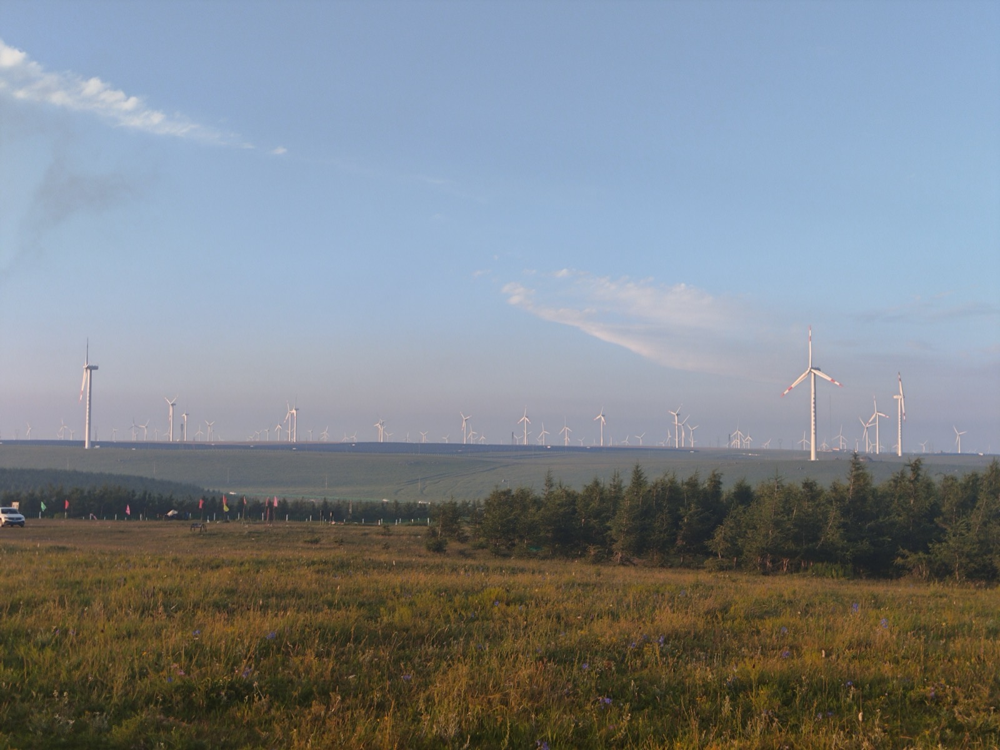

Executive Summary
This article reads the roughly 100 billion yuan ($15 billion) raise that Reuters and Bloomberg reported on October 22, 2026. What catches the eye first is not the amount but the list. The name that sits beside Tencent among the biggest investors belongs to CATL, a company that makes electric-vehicle batteries.
This is not the first time CATL has put money into AI. Within five months this year it took 38.1 percent of the data center operator VNET for $942 million and 49 percent of the parent of Zhongheng Electric, a maker of DC power equipment for data centers, for 4.1 billion yuan, and in between it joined DeepSeek's first outside funding round. All three were arranged the same way: a large stake, no control. Of the three, the VNET deal came with a joint release in which the two companies named the market they are going after. Only the reason for the money in DeepSeek is still unexplained.
Sections 1 through 3 follow what is written in the reporting, the filings, the joint release the two companies issued, and the price list DeepSeek publishes for its own API. Section 4, which reads the four pieces as one picture, and Section 5, which treats the token price as a power question, are this article's interpretation.
Key Figures
The first two give this round and the money CATL spent on the power side. The last two give how DeepSeek prices its tokens and where those tokens are headed.
Sources: China Daily · Dealroom · DeepSeek API pricing · Bloomberg (May–October 2026)
100B yuan
What DeepSeek is closing
About $15 billion. The target rose at least twice, from 50 billion through 80 billion to here
~$1.5 billion
What CATL's side spent on power assets this year
$942 million for 38.1% of VNET, 4.1 billion yuan for 49% of Zhongheng Electric's parent (part of it in kind)
Double
DeepSeek's peak-hour token premium
Since August 16, the Chinese business-hours rate has been exactly twice the rate of the remaining hours
1 gigawatt
What DeepSeek is building in Ulanqab
Power for 750,000 households at full run. 160,000 Huawei chips are planned for inference
The Target Rose Twice While the List Grew Longer
On October 22, 2026, Reuters and Bloomberg reported almost the same thing. DeepSeek, based in Hangzhou, is days away from closing a raise of about 100 billion yuan, roughly $15 billion in dollars. The valuation set before the new money came in was about 500 billion yuan. The round has not closed, so the terms can still change. Two days earlier, on October 20, the United States ordered federal civilian agencies to strip DeepSeek technology out of their systems.
The target was not this size from the start. It began at 50 billion yuan, passed through 80 billion, and climbed to 100 billion. Dealroom converted the early target to $6.88 billion and wrote that the company had raised its target at least twice. This is the case where demand runs over and the side receiving the money makes the number bigger.
More than 15 firms took part. The existing shareholders CATL, Tencent and IDG Capital put in more, and Midea in appliances, Meituan in delivery, Geely in cars and GigaDevice in semiconductors joined for the first time. NetEase, Boyu Capital, CPE and Legend Capital are on the list as well. Of these, Tencent and CATL were named the biggest investors.
Dealroom summed up the list as Chinese frontier AI now running on money from the country's own industrial champions: battery and automotive companies, appliance and semiconductor makers, and the giant internet platforms. The industry it put first is batteries.
The previous round was in June this year. It was the first time DeepSeek had taken outside money since it was founded, about 50 billion yuan or $7.4 billion, and the valuation reported after the money came in was around $50 billion. Founder Liang Wenfeng's stake is written down differently in each tally. The share registered directly in his name is about 34 percent, and counting what he holds through partnerships it reaches the 80 percent range. Put the two rounds together and DeepSeek has raised more than $22 billion this year. The company has appointed CITIC Securities as underwriter and is preparing a listing on Shanghai's STAR Market.
What DeepSeek Sells Is Tokens, and the Price Splits by the Clock
To make sense of the investor list, you have to start from what this company sells. On September 24, at a meeting with investors, Liang Wenfeng said annualized revenue had reached $1 billion, more than double the figure of a few months earlier. And most of that revenue comes from the token fees enterprises and developers pay to reach the model through the API. It is closer to a wholesale business, sold by the token, than to consumer traffic through an app.
At the same meeting Liang said customers had not left even after the price of model access went up, and that demand was still strong. The increase he was talking about took effect at 16:00 UTC on August 16. Until then DeepSeek's price list held one value all day long, and the revision split it into two bands of hours.
The peak hours written in the current price list are 01:00 to 04:00 and 06:00 to 10:00 UTC, Monday through Friday, excluding Chinese public holidays. Moved to Beijing time that is 9 a.m. to noon and 2 p.m. to 6 p.m., China's working hours exactly. Every remaining hour and the whole weekend is off-peak, and the off-peak rate is exactly half the peak rate. For v4-pro, per million tokens, cache-miss input runs $0.66 off-peak and $1.32 at peak, and output $1.98 and $3.96.
The revision raised the price itself as well. Before it, v4-pro output cost $0.87 per million tokens no matter the hour. Today the cheapest off-peak rate is more than twice that, and the peak rate is four and a half times. No hour of the day is left as cheap as August 15 was. That is the height from which the line about customers not leaving was spoken.
Time-of-use electricity pricing has exactly this shape. The rate goes up when demand is heaviest and comes down in the slack hours. DeepSeek has never said it split the price this way because of electricity. The reason the company gave was more rational resource allocation and improved service stability. Reading it as demand shaping, meant to steer users away from the fleet's busiest stretches, stays closer to the facts. Even so, inference demand and power demand run on one clock. Both crowd into the daytime, when people are at work.
Three Things a Battery Maker Bought in Five Months
Neither China Daily nor the Reuters story wrote down why CATL put money into an AI model company. CATL has not said either. Line up what it bought this year instead, and a direction comes through.
3.1The Company That Puts DC Power Into the Building
In April, Hangzhou-based Zhongheng Electric first disclosed CATL's investment plan, and the terms were settled on August 15. CATL did not go into the listed company directly. It injected 4.1 billion yuan, about $608 million, into the parent, Zhongheng Technology Investment, for a 49 percent stake. The parent holds 35.59 percent of the listed company, which puts CATL's share at 17.4 percent on a listed-company basis. No acting-in-concert agreement was signed, and the actual controller is still the founder, Zhu Guoding. What CATL received is one board seat and one deputy general manager.
Nor was all of the 4.1 billion yuan cash. About 1.2 billion was an in-kind contribution, a transfer of 99.697 percent of Shidai Tianyuan, a power-conversion equipment maker inside CATL's group, and the remaining 2.9 billion was cash. The battery maker did not simply put money into a data center power company. It put one of its own power-conversion companies in whole.
Zhongheng Electric makes the equipment that feeds high-voltage direct current into data centers. It holds close to a third of China's intelligent-computing DC power market, and the large data centers run by Alibaba and Tencent are its customers. Its data center power revenue in 2024 was 668 million yuan, up 111 percent from a year earlier, and the share of company-wide revenue climbed from the twenties into the thirties in percentage terms. In the first half of 2025 it reached 45.66 percent and became this company's largest source of income.
Why direct current suddenly pays is explained by the power density of the rack. A server rack used to draw something like 10 kilowatts, while an AI rack climbs toward a megawatt. NVIDIA proposed dropping AC distribution in this range and moving to 800-volt DC, and the white paper it published in October 2025 placed the solid-state transformer at the end of that road. The premium of more than 40 percent CATL paid looks like the price of buying that next step early. The solid-state transformer is still at pilot stage, though, with nothing that counts as revenue, and when the share price jumped Zhongheng Electric filed a separate clarification that it has no agreement with NVIDIA or Google.
3.2The Company That Operates the Building
On May 13 the data center operator VNET disclosed that it was taking on strategic investors. The buyers are two investment companies connected to CATL, and they agreed to acquire more than 650.42 million Class A ordinary shares from existing shareholders for $942 million. In stake terms that is 38.1 percent. The deal, expected to finish in the fourth quarter, was wrapped up early when the share transfer completed on September 21. The buying companies sit under an affiliate that CATL neither controls nor consolidates, and they separately agreed to vote as founder Josh Sheng Chen directs.
The deal made the two buyers VNET's largest shareholders. And the two companies announced a strategic cooperation agreement alongside the share transfer. The market the release names is the one that binds compute and electricity into a single thing, the "compute-energy integration market." CATL supplies power technology including energy storage, and VNET supplies the ability to build and run data centers, the power it has secured, and the customers. The plan they drew together has three layers, and at the top sit "gigawatt-scale compute-energy facilities."
3.3The Company That Runs the Model
The first money into DeepSeek was not this round but June's. Chinese outlets reported that CATL and its affiliate Fuquan Capital put in about 5 billion yuan, which made it the second-largest outside investor after Tencent's 10 billion. The structure of that round is unusual. The corporate investors, Tencent and CATL among them, never appeared on the shareholder register of DeepSeek's operating company. Their money went into a limited partnership that Liang Wenfeng manages, and what they received is an economic share of that partnership. The only one that went into the operating company directly and took voting rights with it was the state AI industry investment fund; the rest accepted no votes, no board seat, and a five-year lock-up. In this October round CATL is the side adding money as an existing shareholder.
Laid on top of one another, the three deals show one thing in common. The money goes in big and the steering wheel does not come along. At Zhongheng Electric the actual controller did not change; at VNET it holds 38.1 percent and still agreed to vote as the founder wishes; at DeepSeek it did not even reach the shareholder register. It reads as buying not control of a company but the position that company stands in.
The numbers in the core business point the same way. CATL's revenue in the first half of 2026 was 276.9 billion yuan, up 54.8 percent from a year earlier, and net profit was 43.3 billion yuan, up 42 percent. Within that, energy storage battery revenue jumped 87.5 percent to 53.261 billion yuan and took 19.2 percent of company-wide revenue. That is 1.6 times the pace of the company's overall growth. At a company that has sold batteries for electric cars, the battery you stack somewhere to even electricity out has become the fastest-growing business.
The Three Investments Overlap in Ulanqab
DeepSeek is not a company that only makes models. Bloomberg reported that it is preparing a 1-gigawatt data center in Ulanqab, Inner Mongolia. Part of it will be built directly and part rented from other operators, with partial operation targeted for late 2027 or early 2028. At full run it will draw as much electricity as 750,000 households use.
A September 4 report also described what goes inside. The plan is to put in at least 160,000 units of Huawei's next-generation accelerator, the Ascend 950DT, and to use them for inference rather than training, even though Huawei designed and released the chip for training. Leaving the teaching of new models on whatever NVIDIA hardware it can get and moving only the daily job of answering user requests onto domestic chips is the plan as it stood at the time of that early-September report. The 160,000 chips are one block of a 1-gigawatt site, and what fills the rest is not yet known.
Ulanqab is a city 350 kilometers northwest of Beijing. The land is wide and the average temperature low, so cooling takes less electricity, and there is plenty of wind and sun, which is why it is one of the eight national computing hubs China designated. New data centers built at these hub nodes are required to cover more than 80 percent of their power with green electricity. More than 90 percent of the city's computing capacity is already assigned to AI work, and Alibaba and Kuaishou are there. So is VNET.

What this site is worth comes out in numbers too. The electricity price a data center pays in Ulanqab runs around 0.32 to 0.36 yuan per kilowatt-hour, clearly below the eastern big cities. Putting one 1-gigawatt site here instead of in the east works out to 2.1 billion yuan, about $290 million, less per year on electricity alone. An average temperature of 4.3 degrees Celsius lets outside air do the cooling in place of chillers.
Then the things CATL bought this year come together in one place. The company that runs the model and the company that operates the buildings are both in Ulanqab, and the same investor holds a stake in the parent of the company that makes the equipment feeding DC power into those buildings. Evening out across the day the electricity that arrives on wind and sun is the job of CATL's core business, the energy storage battery. That two of them sit in the same city, and that the other two hang off those two, is what the filings and the reporting say. With VNET, CATL has gone as far as writing down what it is going after: the first layer the joint release drew is gigawatt-scale compute-energy facilities. Seeing DeepSeek as part of one design is this article's interpretation, and CATL has never explained the DeepSeek deal that way.
Why Pebblous Is Watching This Round
Inference uses electricity. For a company whose revenue comes mostly from API tokens, a large part of cost is in the end the price of power. Across China, data center installed capacity is forecast to grow from 32 gigawatts in 2025 to 60 gigawatts in 2030, and power consumption to reach 289 terawatt-hours in 2030, 2.3 percent of national electricity demand. The capacity share taken by AI and high-performance computing rises from 39 percent in 2025 to 48 percent in 2030.
In the stretch where power becomes the ceiling on inference, the price of one token is not settled by algorithms alone. Even with the same model, which grid it is plugged into and when it runs enter the unit cost. DeepSeek's price list already reading the clock to set a rate shows that direction.
This is where data quality becomes a cost line. Answers that make the user ask again, generations rerun because of hallucination, calls that push in needlessly long context are all extra tokens, and extra tokens are extra electricity. Data that gets to the same conclusion in one pass and data that takes three can score the same on accuracy and still leave a different power bill. That is why Pebblous treats AI-Ready Data as a cost question as much as a quality question.
Moved into practice, three things can be written down right now.
- Count token usage by task, not by model. If you do not know how many tokens it takes to finish one job, you cannot tell which data is the expensive data
- Put the re-ask and regeneration rates next to the accuracy metric. The same accuracy with a different number of re-asks is a different cost
- If you are on a tier where the rate splits by the hour, first count how far the work that is not urgent can be pushed. The way electricity bills have long been handled carries over
Editor's Note
The figure that lasts out of this round will not be the $15 billion. The next round covers that spot over. What stays is the shape of the list. Two years ago a semiconductor company or a cloud company would have been sitting in the big-backer seat at an AI company. A battery maker is sitting there now, and in the same year that company also bought the data center building and the distribution gear inside it. Watch which industry turns up on the next investor list and you can usually see what that industry is stuck on.
Thanks for reading this far. The figures and quotations in this article were checked against primary reporting, filings, and the price list DeepSeek publishes, and where sources disagree the disagreement is written in as it stands. If you have managed inference cost against electricity rates or the time of day, we would be glad to hear about it.
Pebblous Data Communication Team
October 23, 2026
References
Reporting on This Round
- 1.(2026). "DeepSeek nears completion of $15b funding round." China Daily.
- 2.(2026). "Tencent backs DeepSeek's nearly $15 billion raise." Yahoo Finance.
- 3.(2026). "DeepSeek doubles round to $15 billion, led by CATL and Tencent." Dealroom.
- 4.(2026). "DeepSeek reportedly raises $15B days after US restrictions." TechCrunch. — the October 20 ban on use by US federal civilian agencies
- 5.Sircar, A. (2026). "DeepSeek Just Raised $7.4 Billion. Here's The Catch." Forbes. — the June round's partnership structure, voting rights and five-year lock-up
- 6.(2026). "How DeepSeek's landmark funding secures Liang Wenfeng's grip as China's AI rivalry heats up." South China Morning Post.
CATL's Investments in Power Assets
- 7.(2026). "CATL Buys Into AI Data-Center Supply Chain as It Seeks Next Growth Market." Caixin Global. — the third AI infrastructure investment in five months
- 8.(2026). "CATL invests $600 million in Chinese data center power business." ESS News.
- 9.(2026). "CATL Invests 4.1 Billion Yuan in Zhongheng Technology: Calculations Beyond Batteries." 36Kr. — the 1.2 billion yuan in-kind contribution, the 40% premium, the solid-state transformer, and the clarification filing about NVIDIA
- 10.(2026). "CATL-Linked Investors Agree to Buy 38% VNET Stake in $942 Million Deal." Bloomberg.
- 11.VNET Group. (2026). "VNET x CATL: Where Next-Generation AI-Native Compute Infrastructure Meets the Battery Leader." ACN Newswire. — the joint release of September 22 naming the compute-energy integration market and the three layers
- 12.(2026). "CATL storage revenue jumps 88% as H1 profit hits CNY 43.3 billion." ESS News.
- 13.(2026). "DeepSeek Reaches $52 Billion Valuation in Round Backed by Tencent, CATL." Caixin Global. — Tencent's 10 billion yuan and CATL's 5 billion yuan
Pricing and the Power Background
- 14.DeepSeek. (2026). "Models & Pricing." DeepSeek API Docs. — the peak and off-peak rates and the hours they apply
- 15.(2026). "DeepSeek API to Apply Off-Peak Pricing All Weekend as Big-Model Price Hikes Signal Strong Compute Demand." BigGo Finance. — the multiple against the pre-revision rate and the company's stated reason
- 16.(2026). "DeepSeek planning 1GW data center in Inner Mongolia, China – report." Data Center Dynamics.
- 17.(2026). "How a Wind-Swept Northern Chinese City Became a Global AI Powerhouse?" China Tech Bite. — Ulanqab's electricity price, temperature, and wind and solar output
- 18.(2026). "China's data center capacity set to top 60 GW by 2030, driving a doubling of power demand." Rystad Energy.